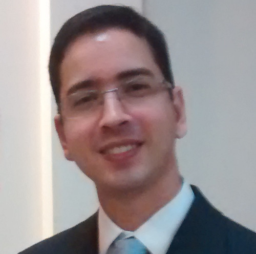

I am a PhD student in Computer Science of Institute of Computing at University of Campinas (UNICAMP), Brazil, since September 2014. Master in Computer Science from Computing Department at Federal University of Sergipe (UFS), 2011-2013. Bachelor of Computer Science from Computing Department at Federal University of Sergipe (UFS), 2005-2009.
I work at Laboratory of Information Systems (LIS) at Institute of Computing under supervision of Prof. Claudia Bauzer Medeiros, Ph.D. I hold a scholarship from São Paulo Research Foundation (FAPESP).
I have done research in several fields of Computer Science such as Recommenter Systems, Software Engineering, Interactive Digital Television (iDTV) and currently working with Scientific Data Management. Former member of Image Processing and Artificial Intelligence Research Group (Pii/CNPq) at UFS, under advisement of Prof. Hendrik Teixeira Macedo, PhD.
My thesis is focused on designing tools and methodologies to foster collaboration among scientists from different disciplines. This collaboration is based on reuse of experiment modeled as scientific workflows. Our ultimate goal is to develop a workflow repository supporting new retrieval mechanisms based on provenance data and ontologies.
This project is in the context of CEPID / CCES (The Center of Computational Engineering and Sciences) at Unicamp, Campinas, Brazil. The CCES congregates experts from 6 different domains -- Computer Science, Chemistry, Physics, Biology, Applied Mathematics and Mechanical Engineering and is funded by São Paulo Research Foundation (FAPESP).
Prototype: W2Share
My advisor is professor Claudia Bauzer Medeiros, PhD.
Carvalho, Lucas A. M. C.; Essawy, Bakinam T.; Garijo, Daniel; Medeiros, Claudia Bauzer; Gil, Yolanda.
Requirements for Supporting the Iterative Exploration of Scientific Workflow Variants.
2017 Workshop on Capturing Scientific Knowledge (SciKnow), held in conjunction with the ACM International Conference on Knowledge Capture (K-CAP), 2017.
[PDF]
Keywords: Scientific Workflows, Workflow Variants, Requirements
Carvalho, Lucas A. M. C.; Wang, Regina; Garijo, Daniel; Gil, Yolanda.
NiW: Converting Notebooks into Workflows to Capture Dataflow and Provenance.
2017 Workshop on Capturing Scientific Knowledge (SciKnow), held in conjunction with the ACM International Conference on Knowledge Capture (K-CAP), 2017.
[PDF]
Keywords: Scientific Workflows, Workflow Design, Electronic Notebooks
Carvalho, Lucas A. M. C.; Malaverri, Joana E. Gonzales; Medeiros, Claudia Bauzer.
Implementing W2Share: Supporting Reproducibility and Quality Assessment in eScience.
In Proceedings of the 11th BreSci - Brazilian e-Science Workshop, Sociedade Brasileira de Computação (SBC), July 5-6, 2017, São Paulo, Brazil, 2017.
[PDF]
Keywords: Scientific Workflows, Reproducibility, Quality Assessment
Carvalho, Lucas A. M. C.; Belhajjame, Khalid; Medeiros, Claudia Bauzer.
Converting Scripts into Reproducible Workflow Research Objects.
Proceedings of 2016 IEEE 12th International Conference on eScience - eScience 2016, IEEE, Baltimore, Maryland, U.S.A., 2016.
[PDF]
Keywords: Scripts, Scientific Workflows, Workflow Research Objects
Carvalho, Lucas A. M. C.; Medeiros, Claudia Bauzer.
Provenance-Based Infrastructure to Support Reuse of Computational Experiments.
Proceedings of the Satellite Events of the 31st Brazilian Symposium on Databases (Thesis and Dissertations Workshop),
Sociedade Brasileira de Computação Salvador, Bahia, Brazil, October 4-7, 2016, ISBN: 978-85-7669-343-7.
[PDF]
Keywords: Scientific Workflows, Workflow Design, Reproducibility
Carvalho, Lucas A. M. C.; Silveira, Rodrigo L.; Pereira, Caroline S.; Skaf, Munir S.; Medeiros, Claudia Bauzer.
Provenance-Based Retrieval: Fostering Reuse and Reproducibility Across Scientific Disciplines.
Provenance and Annotation of Data and Processes (Proceedings of 6th International Provenance and Annotation Workshop - IPAW 2016), LNCS 9672.
Springer International Publishing, McLean, Virginia, U.S.A., 2016, ISBN: 978-3319405926.
[PDF]
Keywords: Provenance Information, Scientific Workflows, Semantic Annotations, Workflow Retrieval
To previous publication before 2016, please see my Google Citation.
A new approach to track and analyze the evolution of scientific experiments. (scholarship supported by FAPESP, grant #2017/03570-3 )
Supervisor: Yolanda Gil
Institution: Information Sciences Institute (ISI), University of Southern California (USC)
Abstract
This research proposal aims at investigating how to track and analyze the evolution of computational experiments, as scientists iteratively design, execute, share, and reuse their data analysis workflows. This will allow the analysis and comparison of workflow versions and how different workflow executions relate to each other. Our ultimate goal is to foster knowledge capture, reuse and understandability of experiments.We will base our approach taking advantage of (database) versioning and provenance models.
Modeling data through different science experiments using scientific workflow and ontologies. (scholarship supported by FAPESP, grant #2014/23861-4)
Abstract
The goal of this project is to provide a common data infrastructure to all researchers in the CCES Center, supporting sharing and reuse of data and models used and/or produced by the Center . The idea is to adopt the notion of scientific workflows as the basis to specify executable models, and create a common computational platform to design, annotate and reuse such workflows.
2015-1S: Object-Oriented Programming (MC302) - Computer Science - Teacher Training Internship under supervison of Prof. Fernando Vanini, MsC.
Work partially financed by São Paulo Research Foundation (FAPESP, grant 2014/23861-4 and 2017/03570-3) and FAPESP/CEPID CCES (grant, 2013/08293-7).
The opinions, hypotheses and conclusions or recommendations expressed in this material are those of the author(s) and do not necessarily reflect the views of FAPESP.